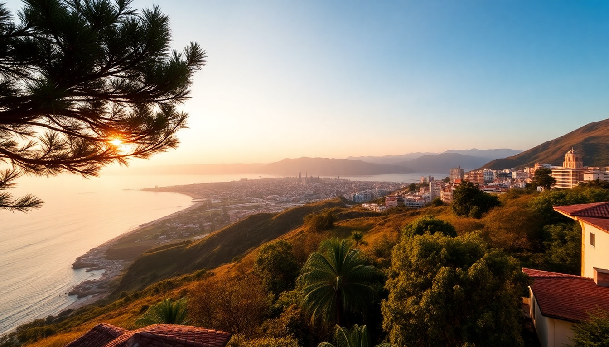

Best Cities to Visit in Peru: Lima, Cusco, Arequipa & Trujillo

I spent five weeks bouncing between Peru’s four most-visited cities, and the differences surprised me. Lima is a chaotic food capital, Cusco feels like a living museum, Arequipa sits in a volcanic valley, and Trujillo is the quiet underdog with pre-Inca ruins that rival Machu Picchu. Here’s what I learned on the ground—what’s worth your time, what’s overhyped, and where to eat, sleep, and wander.
Why visit Lima first?
Most people fly into Lima and leave within 24 hours. That’s a mistake—if you have three days, spend them eating. The city’s food scene is the real draw, and I’d argue it’s the best reason to linger.
- Miraflores is the safest, most walkable neighborhood for first-timers. We stayed at Hotel B in Barranco (artsy, quieter) and walked the Malecón cliffside path every morning.
- For dinner, skip the tourist-packed La Mar and try Isolina in Barranco—a converted house serving Peruvian comfort food like tacu tacu and cau cau.
- Central and Maido are the famous fine-dining spots, but you need reservations weeks ahead. I didn’t make it, but friends raved about the tasting menu at Astrid y Gastón.
- The Larco Museum has the best pre-Columbian collection in the city—less crowded than the gold museum, and the gardens are a nice break from traffic noise.
One warning: traffic is brutal. Uber is cheap (usually under $5 for a 20-minute ride), but avoid rush hour between 5–7 PM. We walked more than we planned and saw the city better for it.
Is Cusco worth the altitude hassle?
Yes, but plan for the altitude. I arrived from Lima and felt dizzy within two hours. Spend your first day slow—coca tea helps, but the best fix is time.
- Cusco’s Plaza de Armas is stunning, but the restaurants around it are overpriced. Walk two blocks to San Pedro Market for a cheap tamal and fresh juice.
- The Saqsaywaman ruins (pronounced “sexy woman” by locals) are a 30-minute uphill walk from the plaza. Pay the Boleto Turístico (130 soles) to enter this and several other sites over ten days.
- For accommodation, we booked Casa Andina Premium Cusco—it’s on a quiet street off the plaza and has oxygen-enriched rooms if you struggle with the thin air.
- Sacred Valley day trips are worth it if you have two days. Ollantaytambo is the most impressive fortress, and Moray’s circular terraces are a quick photo stop.
Skip the tourist train to Machu Picchu if you’re on a budget—take the Inca Rail from Ollantaytambo instead (half the price, same views). And book Machu Picchu tickets at least a month ahead; I almost missed out.
What makes Arequipa different from Cusco?
Arequipa is calmer, whiter (the buildings are made of volcanic sillar stone), and less crowded. It’s also the base for Colca Canyon, which I’d call the real highlight of southern Peru.
- The Santa Catalina Monastery is a city within a city—plan two hours to wander the blue and red alleyways. It’s touristy but genuinely beautiful.
- Stay in Yanahuara, a neighborhood with views of the Misti Volcano. We loved Casa Arequipa Boutique Hotel—small, family-run, and 15 minutes from the plaza.
- For food, La Nueva Palomino serves the best rocoto relleno (stuffed spicy pepper) I had in Peru. It’s a hole-in-the-wall on Calle Moral.
- The Colca Canyon trek is two days, one night, and you’ll descend 1,200 meters into the valley. We booked through Colca Trek for $60 per person, including a guide and basic lodging.
One tip: the condor viewing at Cruz del Condor happens between 7–9 AM. Get there by 6:30 or you’ll fight crowds. I saw three condors glide past—worth the early wake-up.
Should you visit Trujillo?
Most travelers skip Trujillo for Lima or Cusco, but I’d argue it’s the best city for pre-Inca history without the crowds. The Huacas del Sol y de la Luna (Moche temples) are as impressive as anything in the Sacred Valley, and you’ll have them almost to yourself.
- The Huaca de la Luna is the better-preserved site—the murals of the Moche god Ai Apaec are still vivid. It’s a 20-minute taxi from the city center.
- Chan Chan, the largest adobe city in the world, is a 15-minute ride north. It’s crumbling, but the Tschudi Palace section is restored and gives you a sense of the scale.
- Stay in the Casa Andina Select Trujillo—it’s near the main plaza and has a rooftop pool that’s a lifesaver after dusty ruins.
- For food, El Mochica on the plaza serves classic cabrito (goat stew) that locals swear by. I preferred Restaurant Romano for its ceviche mixto—fresher and less touristy.
Trujillo’s beach town Huanchaco is a 15-minute bus ride away. The reed boats (caballitos de totora) are still used by fishermen there—it’s a nice afternoon detour, but the water is cold year-round.
When is the best time to visit these cities?
Peru’s seasons vary by region, and the “best” time depends on which cities you prioritize.
- Lima is gray and damp from June to October (the garúa fog). I visited in March and had blue skies—aim for December to April for sunny weather.
- Cusco has a dry season from May to September. That’s also peak tourist season, so expect crowds at Machu Picchu. I went in late April and got rain in the afternoons but fewer people.
- Arequipa is sunny year-round, but the Colca Canyon is best visited May–September (dry trails). January to March brings rain and potential road closures.
- Trujillo sees a summer from December to March. The rest of the year is mild, but the huayco (mudslides) can hit in February if El Niño is active.
I’d pick April or October for a balanced trip—fewer tourists, decent weather in most cities, and lower flight prices.
How do you get between these cities?
Domestic flights are the only practical option for a two-week trip. Buses exist but take 12–20 hours between cities.
- Lima to Cusco: Fly with LATAM or Sky Airline—1 hour, around $60–$100 one-way. The bus takes 21 hours and is not comfortable.
- Cusco to Arequipa: Also a 1-hour flight. We took a night bus once (Cruz del Sur, $35) and regretted it—freezing cold and bumpy.
- Arequipa to Lima: 1.5-hour flight. The coastal bus is scenic but takes 16 hours.
- Lima to Trujillo: Flights are 1 hour; buses run 8–9 hours on the Panamericana Highway. We flew because the road is monotonous.
Book internal flights two to three weeks ahead for the best prices. I used Kayak to compare, but LATAM’s own site was cheaper for the Cusco–Arequipa leg.
FAQ
Is it safe to walk around Lima and Trujillo at night? Lima’s Miraflores and Barranco are safe after dark if you stick to main streets—I walked back from dinner at 10 PM without issues. Trujillo’s center is fine, but avoid the outer districts like La Esperanza. In both cities, take an Uber rather than a taxi off the street.
Do I need to book Machu Picchu tickets in advance? Yes, absolutely. I booked mine six weeks ahead through the official government site, and July slots were already limited. If you want the Huayna Picchu climb, book at least three months early—those 400 daily permits sell out fast.
What’s the best way to handle altitude in Cusco? Drink coca tea, skip alcohol for the first two days, and take it slow. I popped acetazolamide (Diamox) prescribed by my doctor—it helped with the headache. If you feel sick, most hotels offer oxygen tanks for free. Don’t try to hike to Machu Picchu on day one.
Conclusion
- Lima deserves 2–3 days for its food and coastal walks—don’t treat it as a layover.
- Cusco is the gateway to Machu Picchu, but the city itself and the Sacred Valley are worth at least four days.
- Arequipa offers a quieter, whiter alternative to Cusco, with Colca Canyon as the real prize.
- Trujillo is the unsung hero for pre-Inca ruins—skip it only if you’re short on time.
- Fly between cities to save time; book Machu Picchu and Colca Canyon tours in advance.